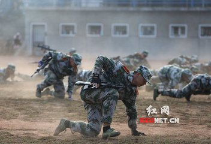
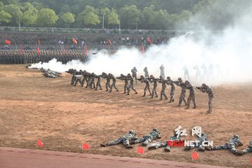
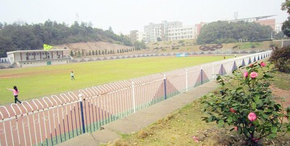
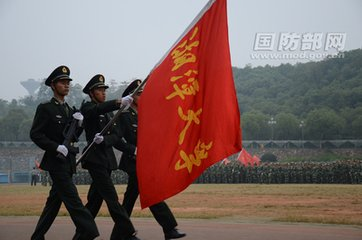
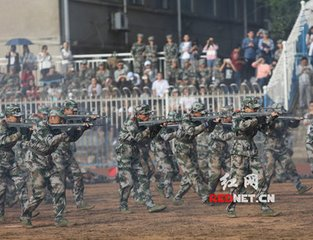
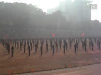

军训风采
关于军训
军训是学生接受国防教育的基本形式，是培养"四有"人才的一项重要措施，是培养和储备我军后备兵员及预备役军官，壮大国防力量的极度有效的手段。 军训的目的是通过严格的军事训练提高学生的政治觉悟，激发爱国热情，发扬革命英雄主义精神，培养艰苦奋斗，刻苦耐劳的坚强毅力和集体主义精神，增强国防观念和组织纪律性，养成良好的学风和生活作风，掌握基本军事知识和技能。
我们的风采






我们想说的
如果说人生是一本书，那么，军训的生活便是这本书中最美丽的章节;
如果说人生是一出戏，那么，军训的生活便是这出戏中最精彩的一幕。